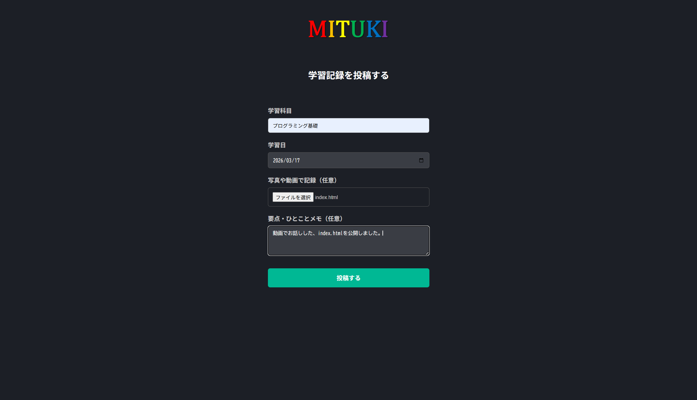
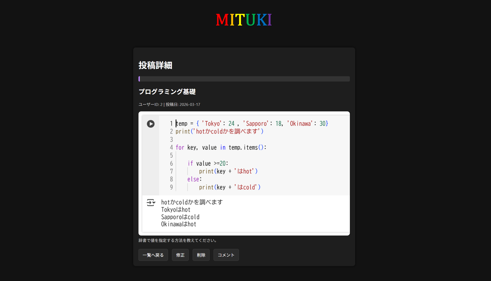
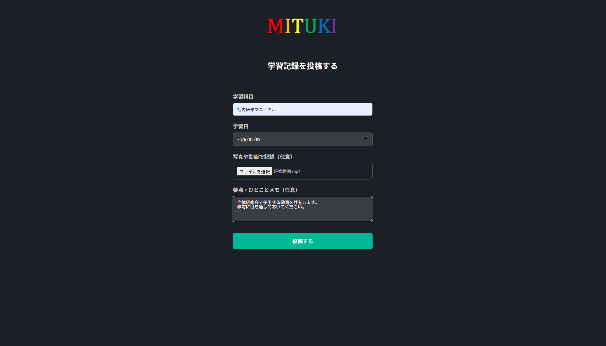

≪制作について≫
現状と解決策
サービスの概要
「学び」を中心にした、共有学習プラットフォーム → みんなで共有できる新しい教室
こだわった点
1,画像や動画での投稿も

従来の学習記録アプリは、学習時間とテキストで記録するのに対して、本サービスは画像や動画、ファイルでも記録することができる。
2,ほかのユーザに質問を

ただ記録するだけではなく、横のつながりを意識した設計に。
3,あらゆる場面で活躍

学習以外にも、社内研修やグループワーク、課題提出にも利用できる。
現状：長時間勉強することが目的になってしまっている学生が多い。
原因：学習記録アプリは学習時間を記録するものが多く、他者から見えるため学習時間に比重を置いてしまう。
解決策：時間ではなく、内容を記録でき、共有できるサービスを提供する。